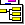

| Board Manager | DISCUS Administration Instructions |
The Board Manager allows the superuser to add, remove, and configure topics as well as to change several options that directly affect the front page (such as the message displayed on the bottom of the page, the appearance of the board logo section, and the color scheme of the board). The Board Manager is restricted to the superuser -- ordinary moderators cannot access the Board Manager. To access the Board Manager, click on "Board Manager" from the administration program main menu.
Title message
The appearance of the top of the screen, where the board logo normally appears by default, can be customized by the superuser by editing the "Title Message" through the Board Manager.
To change the title message, enter the desired message in the text entry box under "Title Message." You may use all formatting tags except image upload in your message. Then click on "Preview/Save Message." If you wish to change your entry, modify the contents of the text entry box and then click on "Refresh Preview." When your message is correct, click on "Save Message."
The default for the title message is the board logo centered on the screen, which can be achieved by entering \c{\clipart{board_logo}} as your title message. If you wish to use your own logo, upload a file called board_logo.gif to the "clipart" directory, and use the formatting code stated here to include your new logo.
You have your choice if you would like to display a horizontal rule (HTML: <HR>) below the title message you've entered in the box. Whether or not you will do this depends on the title message you're using and the template for the topics on your page. To display a horizontal rule, check the box next to "Display horizontal rule (<HR>) below Title Message" and then preview and save the title message.
Topics
The superuser has several options dealing with topics. The superuser can delete, rename, reorder, change the group of, or add subtopics from the administration interface.
- Deleting a topic
Click on the delete icon (![[Delete Icon]](icons/delete_icon.gif) ) next to the topic you wish to delete. You may also use the check boxes in the "Mark" column to select the topics you wish to delete, and then click on the delete icon in the "(Marked)" row. You must click on "OK" to confirm the deletion of a topic.
WARNING! If you delete a topic, the contents of the deleted page will be permanently lost; in addition, any subtopics of the deleted topic will also be recursively deleted.
) next to the topic you wish to delete. You may also use the check boxes in the "Mark" column to select the topics you wish to delete, and then click on the delete icon in the "(Marked)" row. You must click on "OK" to confirm the deletion of a topic.
WARNING! If you delete a topic, the contents of the deleted page will be permanently lost; in addition, any subtopics of the deleted topic will also be recursively deleted.
- Changing the group of a topic
Click on the group icon (![[Group Icon]](icons/group_icon.gif) ) next to the topic for which you wish to change the group. You may also use the check boxes in the "Mark" column to select the topics you wish to change the group of, and then click on the group icon in the "(Marked)" row. You are then presented with a form prompting you for the new group of the topic. Select the new group for the topic from the dropdown menu box and then click on "Change Topic Group" to make the change.
) next to the topic for which you wish to change the group. You may also use the check boxes in the "Mark" column to select the topics you wish to change the group of, and then click on the group icon in the "(Marked)" row. You are then presented with a form prompting you for the new group of the topic. Select the new group for the topic from the dropdown menu box and then click on "Change Topic Group" to make the change.
- Changing properties of a topic
Click on the properties icon () next to the topic for which you wish to edit properties. The following properties are available:
- Topic Name
This allows you to rename the topic. Enter the desired name for the topic into the text box next to "Name:" and click "Rename Topic" to rename the topic. You can use simple formatting tags (bold, italics) in the topic name if you wish.
- Topic Description
The topic description appears on the top page, indented and directly under the topic name. You can enter a sentence or two describing the purpose of the topic. To enter or edit a description, type the description into the provided text box, and click "Preview/Save Description" to preview the description. To save the description, click the "Save Message" button on the next page. If you do not wish to use a topic description, delete all text in the box and preview and save the message (i.e., blank descriptions are permitted).
- META Tags
To use META tags for the description, key words, and robots directives, enter the desired META tags into the blanks and click the "Save META Tags" button. This applies the selected META tags to all pages in the topic. Consult one of the many available WWW pages describing META tags for more information.
- Topic Display Properties
Topic display properties include whether the topic is hidden or visible on the page. You can also choose the icon that is displayed before the topic name (if you have icons showing on the page).
Choosing "hidden" makes the topic not appear on the topics list. However, the topic will still be searchable and listed in the New Messages and Tree View interfaces! If the topic is restricted using the Discus Pro reading privileges (configured through Access Manager), the topic may not appear in the searches or Tree View, either. In short, whether or not the topic appears in the utilities depends on its reading permissions as set by the Access Manager, not based on whether or not it is hidden! Note that if you hide a file, there will not be a link for your users to find the topic. Thus, you will need to copy the URL and place it elsewhere on your site or give the URL to your users. Finally, hiding a topic simply comments it out on the topics page. Anyone who examines the source of the page will be able to find the topic and copy the URL into his or her browser directly. Thus, hiding the topic should not be considered to be secure. The only secure way to restrict access to a topic is to use the Discus Pro private reading features.
Available choices for the icon are not to have an icon displayed or to use the folder or locked-folder icon. You can create a custom icon for the topic by uploading an icon file to the "messages" directory. This file must be named "####-icon.gif" where #### is the topic's number. For example, if your topic was stored in subdirectory 24, the icon file name would be "24-icon.gif". The custom icon will be visible immediately after uploading. To change the custom icon, upload a new image file as directed here. When transferring image files by FTP, it is necessary to use the "binary" mode of transfer. Permissions on the icon file can be set to 0755 (rwxr-xr-x).
- Reordering topics
Enter numbers corresponding to the new order for the topics (lower numbers will move topics higher in the list). You may use decimals or negative numbers for convenience. To impose your new order, click on the reorder icon ().
There are three commonly-used reordering schemes available as text links below the reorder icon. To reverse the order of the topics, click the Reverse link. To alphabetize the topics, click the A-Z link. To reverse alphabetize the topics, click the Z-A link. Clicking any of these links does not automatically reorder the topics; you must click the reorder icon to finalize your new order.
- Adding a topic
Enter the name for the topic in the "Topic Name:" text entry box under "Add a Topic." Then, select the group for the topic from the dropdown menu box. To finish adding the topic, click on "Add this Topic."
You can set posting privileges on your new topic to private or public. Private means that an account (username and password) will be required to post to the topic. Public means that anyone at all can post to that topic. Your posting privileges can be modified using the Access Manager once the topic is created.
You can set the initial content of your new topic if desired. Two options are available: a page with a "Create New Conversation" button and an about message, and a blank page. You can change the layout of the page and the options available on the page using the Page Manager once the topic is created.
You can set a topic description for your new topic if desired. To enter a topic description, type in the topic description into the provided box. The description is placed on the topics page under the topic name. You can change, add, or eliminate topic descriptions after the topic is created by clicking the properties icon next to the topic name.
Main Message
The "main message" allows a message to be placed on the top screen of the board. This is usually some sort of welcome message or very basic instructions for new users, but can also be used for important system announcements.
To change the main message, enter the desired message in the text entry box under "Main Message." You may use all formatting tags except image upload in your message. Then click on "Preview/Save Message." If you wish to change your entry, modify the contents of the text entry box and then click on "Refresh Preview." When your message is correct, click on "Save Message."
You have your choice if you would like to display a horizontal rule (HTML: <HR>) above the main message you've entered in the box. Whether or not you will do this depends on the main message you're using and the template for the topics on your page. To display a horizontal rule, check the box next to "Display horizontal rule (<HR>) above Main Message" and then preview and save the main message.
Board Appearance
The color scheme, font, and background image of each page on the discussion board can be modified using the "Board Appearance" option. Changes are made on the top page and all subtopic pages. Settings can be changed at any time.
The board colors (for background, text, link, visited link, and active link) are set in traditional HTML hex codes or by typing in the name of a recognized color. The font face can be a comma delimited list of fonts (such as "Verdana,Arial,Helvetica") and the browser will choose the first available font on the system to display. The font size is a number between 1 (small) and 7 (large) -- "12 point" fonts correspond to size 3 and are generally the most readable, although for Verdana, size 2 is most readable. The background image is a URL (such as "http://your.server.com/images/background.jpg") and must be a valid URL to an existing image.
To change the board appearance, enter or modify any of the settings using the text entry boxes provided. Click on "Preview/Save Appearance" for a preview of your settings. To revise your settings, change any of the text entry boxes on the preview screen and then click on "Refresh Preview" to preview again your settings. To save your settings, click on "Save Appearance." The program will apply your new settings to all pages on the board recursively.
WARNING! The program performs no error checking of your colors, fonts, or background URLs. The program will not warn you if the colors will not go well together or if you have entered invalid fonts. It is strongly recommended that you consider carefully the colors, fonts, and background image for maximum readability by your users. It is important to check your new color scheme in both Netscape and Internet Explorer, as these programs sometimes display colors differently.
META tags
To use META tags for the description, key words, and robots directives, enter the desired META tags into the blanks and click the "Save META Tags" button. This applies the selected META tags to the top page only. If you want to apply those META tags to all topics on the board, check the "Apply to all pages on board" box before saving the META tags (this overwrites any of the individual settings chosen when configuring topic properties). Consult one of the many available WWW pages describing META tags for more information.
Templates and Structure
The Discus program allows board administrators to use a variety of templates to create a custom look for their boards. The "Templates and Structure" box allows administrators to regenerate the board based on these new templates. In addition, regeneration of certain important data structures used by the program can be accomplished using this interface.
Topic Selection: This allows you to select which topic will be regenerated or reindexed. If you know there is a specific problem with one topic on the board and you do not need to regenerate or reindex the entire board, selecting a topic will save you time. If you need to regenerate more than one topic, or you are not sure which topic needs to be regenerated, you should leave this set to "All Topics." Note that there is never a reason why you should need to select every topic on your board individually with this box.
Index Board: Discus maintains a file which contains information about the structure of the board. This file allows pages to be rendered more quickly in searches and administration, and allows for fast searches of subtopic and topic names. If the server crashes in the middle of writing this file, it may be corrupted and you may see messages such as * ##/## Not in tree file * on your board. Clicking "Index Board" will rebuild this index from the pages on your board. It is possible that if in the past your board crashed due to a disk quota problem or a reset of the file name counter that your board may not index properly. If Discus detects such a problem, it will present you with the opportunity to fix the problem. Discus fixes the problem (two files with the same name) by renaming each of those files with its own unique name. All links within the Discus program are updated to point to this new file name. It is suggested that after you index your board that you subsequently run the option to update the subtopic/message lists by clicking the "Regenerate Subtopic/Message Lists" button. This ensures that the most information written from the tree file appears on the board.
Search Index: Discus maintains index files for your message pages which contains the key words from each message. This allows the search engine to search all of your pages rapidly without needing to open up each page. If the server crashes in the middle of writing this file, it may be corrupted and results from one topic may not show up properly in your search results. Clicking "Regenerate Search Index" will rebuild all of these indices from the pages on your board.
Subtopic/Message Templates: Discus 3.10 (and higher) controls the look of the subtopic lists and message lists on your pages through these templates. Editing these templates is recommended only for advanced users. More information on customization of templates is available from the Discus Support Center. Clicking "Regenerate Subtopic/Message Lists" will rebuild these aspects of your pages from your templates, and is necessary only if you have modified these templates.
Topic Template: Discus 3.10 (and higher) controls the look of the topic list (on the top page of the board) through this template. Editing this templates is recommended only for advanced users. More information on customization of templates is available from the Discus Support Center. Clicking "Regenerate Topic List" will rebuild the topics page on your board based on your template, and is necessary only if you have modified this template.
Page Templates: All recent versions of Discus generate message pages from the "newpage.conf" template file. If you have modified this file or if you are moving from one server to another, click "Regenerate Pages" to rebuild all of your Discus pages from these template files.
| Copyright © 2000, DiscusWare, LLC, all rights reserved |    |